# Einführung in die Digital Humanities <br/> ### Prof. Dr. Christof Schöch <br/> <hr/> <p><strong>Bachelor Sprache, Technologie und Medien (STeM)</strong></p> <p><strong>Sommersemester 2021</strong></p> <hr/> <img height="70" data-src="img/basics/uni-trier.png"> -- ## Organisatorisches --- ### Was ist die Prüfungsleistung? * Entwickeln und präsentieren Sie im Team eine Projektidee * Mögliche Bereiche * ein neues Produkt oder einen Service * eine neue Anwendung mit gesellschaftlichem Nutzen * eine neue Anwendung für Medien, Kommunikation, Literatur, etc. * Mögliche Zielgruppen haben, * Journalisten, Verlage, Social Media, Bibliotheken * Endnutzer:innen, "die Bevölkerung" * Forschende in DH, CL, Medienwissenschaften, etc. * Themenzuordnung * Entweder aus dem Bereich der "Einführung in die Digital Humanities" * oder: "Anwendungen der Künstlichen Intelligenz und Computerlinguistik" --- ### Prüfungsleistung: Ablauf * Sie wurden bereits einer Gruppe zugeteilt * Wenn das bei Ihnen nicht der Fall ist, bitte an Jeldo Meppen wenden (s2jemepp@uni-trier.de). * Jede Gruppe wird dann in StudIP einem Team zugeordnet * Die Teams treffen sich regelmäßig und selbständig, um eine Projektidee zu entwickeln (u.a. über Zoom) * Am Ende des Semsters wird die Projektidee präsentiert: * Prepare to present your project idea at the end of the semester via * Als "one-slide-one-minute" Präsentation * Als Poster-Präsentation * Projekttitel, Präsentation oder Poster bis 12. Juli über StudIP einreichen * Präsentation oder Poster am Donnerstag, den 15. Juli vorstellen (via Zoom oder Wonder.me) --- ### Wie wird die Projektidee bewertet? * Wie innovativ, interdisziplinär und originell ist die Idee? * Relevanz und Impact: Wie nützlich ist die Idee? * Machbarkeit: Könnte die Idee umgesetzt werden? * Teamwork: Wie gut hat das Team zusammengearbeitet? --- ### Noch mehr Formalitäten * Sie müssen sich zu der Prüfung individuell auf PORTA anmelden. * Anmeldezeitraum: ca. 2-6 Wochen vor dem Prüfungstermin. * Wenn Sie nicht zur Prüfung angemeldet sind, werden Sie nicht zur Prüfung zugelassen. * Nach Bewertung Ihrer Prüfungsleistung können Sie das Ergebnis der Prüfung in PORTA nachschlagen. --- ### Kontakt bei Fragen * Anmeldung zu Veranstaltungen oder Prüfungen: bitte an das Hochschulprüfungsamt wenden. * Fragen organisatorischer Art zu diesem Modul: Rita Thielen (thielenr@uni-trier.de). * Inhaltliche Fragen zur DH-Vorlesung oder zu ihrer DH-Projektidee haben: Christof Schöch (schoech@uni-trier.de) * Organisatorische/technische Fragen zur Gruppeneinteilung oder Postersession etc. haben: Jeldo (s2jemepp@uni-trier.de). * Generelle Fragen zum STeM-Studiengang: Sven Naumann (naumsven@uni-trier.de). -- ## Das Semester im Überblick --- ### Praktische Hinweise * Den exakten Semesterplan finden Sie im StudIP-Kursraum im Wiki * Alle Recherche-Aufgaben finden Sie dort im Bereich DoIT! * Der Zoom-Link für die synchronen Sessions steht auch dort * Diese Folien finden Sie jederzeit unter: https://dh-trier.github.io/dh-stem * Die Folien werden laufend um neue Themen ergänzt * Eine Bibliographie mit einführenden Lektüren finden Sie hier: https://www.zotero.org/groups/2162827/dh-bibliographie_trier/library --- ### Veranstaltungsformen * Die Veranstaltung ist in Wochen gegliedert * Sie findet teils asynchron, teils synchron statt * Jede Woche gibt es: * Einen Termin als Videokonferenz (synchron) zur Besprechung von Aufgaben oder Diskussion von Themen; * Eine Aufgabe zur Vorbereitung auf das Thema der folgenden Woche. Die Aufgabe kann eine Rechercheaufgabe sein oder die Auseinandersetzung mit einem Screencast. * Ggfs. weitere Aktivitäten vor allem zur Vorbereitung des Posters --- ### Die Themenübersicht 1. Was sind die Digital Humanities? 1. Digitale Edition 1. Computational Literary Studies 1. Digitale Musikwissenschaft 1. Stilometrische Autorschaftsattribution 1. Linked Open Data 1. Visualisierung 1. Open Science -- ## Thema 1: Was sind die Digital Humanities? --- ### whatisdigitalhumanities.com <a href="https://whatisdigitalhumanities.com/"><img height="500" data-src="img/1_whatisdh.png"></a> --- ### Kleine Fächer <a href="https://www.kleinefaecher.de/kartierung/kleine-faecher-von-a-z.html?tx_dmdb_monitoring%5BdisciplineTaxonomy%5D=140&cHash=c5b76ccd171ecce8fe0ed45c4afaa5bc"><img height="500" data-src="img/1_kleinefaecher.png"></a> --- ## (1) Rechercheaufgaben <br/> * Zur Frage der Definition der Digital Humanities<br/>(whatisdigitalhumanities.com) * Zur Frage der Themen der Digital Humanities<br/>(IDHC, ZfdG) --- ## (2) DH als Disziplin? Aktuelle Trends --- ### Institutionalisierung * Verbände * D: DHd-Verband, fachbezogene AGs * Int'l: EADH, ADHO, TEI, MEI, ESTS * Jahrestagungen * D: DHd-Verband * Int'l: DHBenelux, AIUCD, HDH, DHN, DH Conference, etc. * Zeitschriften * D: Zeitschrift für digitale Geisteswissenschaften (ZfdG) * Int'l: DSH, DHQ, Digital Studies / Le champ numérique, Cultural Analytics, Umanistica digitale, Humanités numériques, uvm. * Studiengänge * D und Int'l: siehe [DH Course Registry](https://registries.clarin-dariah.eu/courses/) * Professuren * D: siehe [Portal Kleine Fächer](https://www.kleinefaecher.de/kartierung/kleine-faecher-von-a-z.html?tx_dmdb_monitoring%5BdisciplineTaxonomy%5D=140&cHash=c5b76ccd171ecce8fe0ed45c4afaa5bc) --- ### Ausdifferenzierung * Digitale Editionswissenschaften * Digital History * Computational Literary Studies * Digitale Kunstgeschichte * Digitale Musikwissenschaften<br/>/ Music Information Retrieval * Digitale Archäologie * Critical Code Studies * Game Studies * Digital Cultural Heritage Studies * Computerlinguistik * Angewandte Informatik * ... --- ### Was bedeutet das eigentlich? * Institutionalisierung <!-- .element: class="fragment" data-fragment-index="1" --> * => Konsolidierung als Disziplin * => Gemeinsame fachliche Identität * Ausdifferenzierung <!-- .element: class="fragment" data-fragment-index="2" --> * => Viele Teildisziplinen * => Spezifischere fachliche Identitäten * => Diffusion in die etablierten Disziplinen? * Folgefragen <!-- .element: class="fragment" data-fragment-index="3" --> * Gibt es ein Mainstreaming der Digital Humanities? * Wird der Begriff Digital Humanities irgendwann obsolet? * Was verbindet alle DH-Teilbereiche? --- ### Abschluss: Lektüreempfehlung <br/> * ["Was ist DH?"](https://www.zotero.org/groups/2162827/dh-bibliographie_trier/collections/KA42XEA4) auf Zotero --- ### Rechercheaufgabe 1 (IDHC) 1. Joseph Rudman: authorship attribution, statistics, stylistics, shakespeare und collaboration; 1985 bis 2017 1. "Data Modeling": 13 Einträge (keyword!) 1. Topic Modeling: seit 2013 1. TextGrid: 4 Workshops (nur Workshops!) 1. Erste Konferenz mit Details: 1. 1964 (Dez), "Conference on the Use of Computers in Humanistic Research", Rutgers 1. Themen: Computer und Literatur, Geschichte, Musikwissenschaft 1. 1964 (Sept) - Literary Data Processing Conference - Yorktown Heights (incomplete) 1. (Erwähnt auch 1960, "Maschinelle Methoden der literarischen Analyse undder Lexikographie", Tübingen) --- ### Rechercheaufgabe 1 (IDHC) * Wünsche für die Plattform * Übergreifende Suchleiste * Filter nach Keywords funktioniert nicht (gut) * übersichtlicher * Filter nach complete / incomplete data * Filter nach Ort und/oder Jahr * Nützlich, um zu verstehen, was DH ist? * Entwicklung über die Zeit * relevante Themen * guter Überblick * Keywords sind nützlich * Nein, keine Definition(en) * Nein: Nur Begriffe, keine Projekte --- ### Rechercheaufgabe 2 (whatisdigitalhumanities?) * Gemeinsamkeiten * Alle zu Digitalisierung / Technologie * Vorteile der DH * Alle eher unpräzise * Unterschiede * Sehr unterschiedlicher Stil * Unterschiedliche Länge * Teils spielen Medien eine Rolle * Teils sehr persönlich * Vergleich mit Wikipedia * Umfassender * Sachlicher * Mehr Fokus auf Humanities * Mehr Beispiele * Perspektive: Digitalisierung mit geisteswiss. Methoden * Bedeutung von Daten --- ### Rechercheaufgabe 3 (ZfdG) * Themen, die Sie interessieren * Literaturwissenschaft * Geschichtswissenschaft * Umgang mit Unsicherheit/Zweifel * Digitalisierung * Open Educational Resources * Filme * Karten * Social Networks * Märchenforschung * Blockchain * Dominierende Themen 2019-2020 * Netzwerke * Modellierung * Methodologie * (digitale) Literaturwissenschaft * Edition --- ### Rechercheaufgabe 4 (Screencast) * (1) Mit welchem Fach fühlen Sie sich verbunden? * Medienwissenschaften * Digitale Musikwissenschaften * Computerlinguistik * Digitale Kunstgeschichte * Digital History * Sprachwissenschaften * Filmwissenschaft * Philosophie * Politikwissenschaft * Game Studies * Computational Literary Studies / Litwiss. --- ### Rechercheaufgabe 4 (Screencast) * (2) Stand in ihrem Fach? * Diskussionsbeiträge -- ## Thema 2: Digitale Edition --- #### Letters of Van Gogh <a href="http://vangoghletters.org/vg/"><img height="500" data-src="img/2_vangogh.png"></a> --- ### (1) Vorteile Digitaler Editionen 1. Durchsuchbarkeit / Übersichtlichkeit <!-- .element: class="fragment" data-fragment-index="1" --> 1. Dynamik / Interaktivität: verschiedene Perspektiven <!-- .element: class="fragment" data-fragment-index="2" --> 1. Text + Raum für Erläuterungen <!-- .element: class="fragment" data-fragment-index="3" --> 1. Zusammenführung großer Datenmengen <!-- .element: class="fragment" data-fragment-index="4" --> 1. Keine Platzbegrenzung: Varianten, Kommentare, ... <!-- .element: class="fragment" data-fragment-index="5" --> 1. Multimedialität: Text, Bild, Ton <!-- .element: class="fragment" data-fragment-index="6" --> 1. Unabhängig von Ort, Zeit, Budget nutzbar <!-- .element: class="fragment" data-fragment-index="7" --> 1. Weiterverarbeitung der Daten <!-- .element: class="fragment" data-fragment-index="8" --> 1. Vernetzung mit anderen Ressourcen <!-- .element: class="fragment" data-fragment-index="9" --> --- ### (1) Weitere Vorteile 1. "jederzeit erweiterbar / korrigierbar": siehe http://faustedition.net/, "1.2 RC" <!-- .element: class="fragment" data-fragment-index="1" --> 1. "Umweltfreundlich" (kein Druck) <!-- .element: class="fragment" data-fragment-index="2" --> 1. "Langfristige Aufbewahrung fragiler Objekte" <!-- .element: class="fragment" data-fragment-index="3" --> 1. "Text ist gesichert" = Edition; nicht speziell digitale Edition <!-- .element: class="fragment" data-fragment-index="4" --> 1. "erhöhte Authentizität und Transparenz" <!-- .element: class="fragment" data-fragment-index="5" --> 1. "größere Reichweite": guter Punkt (Anbietenden-Perspektive) <!-- .element: class="fragment" data-fragment-index="6" --> 1. "Vernetzung über Normdaten": zum Beispiel GND (Autor:innen, Werke) oder TGN (Ortsnamen) <!-- .element: class="fragment" data-fragment-index="7" --> 1. "Kann auf allen Geräten genutzt werden": auch mobile Endgeräte <!-- .element: class="fragment" data-fragment-index="8" --> --- ### (1) Weitere Punkte 1. "Visualisierungen": visuelle,<br/>ggfs. dynamische Aufbereitung der Daten <!-- .element: class="fragment" data-fragment-index="1" --> 1. Möglichkeit der Kommentierung <!-- .element: class="fragment" data-fragment-index="2" --> 1. Ästhetisch ansprechende Umsetzung <!-- .element: class="fragment" data-fragment-index="3" --> 1. Nachteil: sehr großer Aufwand bei der Erstellung <!-- .element: class="fragment" data-fragment-index="4" --> --- ### Typen von Editionen 1. Faksimile-Ausgabe 1. Textarchiv 1. Knowledge Site 1. Social Edition 1. Historisch-Kritische Ausgabe 1. Medien-Edition --- ### (2) Schlegel-Briefedition: Vorteile? * https://august-wilhelm-schlegel.de/briefedigital/ * Flexibler Zugriff: z.B. Filter nach Kategorien, Register <!-- .element: class="fragment" data-fragment-index="1" --> * Durchsuchbarkeit: ja, Volltextsuche <!-- .element: class="fragment" data-fragment-index="2" --> * zuverlässiger Text: (woran festmachen?) <!-- .element: class="fragment" data-fragment-index="3" --> * Flexible Darstellung: ja, Anzeigeoptionen (links / rechts / oben) <!-- .element: class="fragment" data-fragment-index="4" --> * Visualisierungen: Wordle der Korrespondent:innen <!-- .element: class="fragment" data-fragment-index="5" --> * Einfache Erreichbarkeit: ja <!-- .element: class="fragment" data-fragment-index="6" --> * Transparenz: Faksimile zur Transkription (prüfbar) <!-- .element: class="fragment" data-fragment-index="7" --> * Normdaten: vorhanden (GND) <!-- .element: class="fragment" data-fragment-index="8" --> --- ### (2) Schlegel-Briefedition * Erläuterungen: [Beispiel](https://august-wilhelm-schlegel.de/version-10-20/briefid/860) <!-- .element: class="fragment" data-fragment-index="1" --> * Ergänzungen: ja, siehe "Version 10-2020" <!-- .element: class="fragment" data-fragment-index="2" --> * Keine Platzbegrenzung / große Datenmengen: ja, 5000 Briefe! <!-- .element: class="fragment" data-fragment-index="3" --> * Multimedialität: Text und Bild, aber kein Audio <!-- .element: class="fragment" data-fragment-index="4" --> * Umweltfreundlich: ja (aber Server!) <!-- .element: class="fragment" data-fragment-index="5" --> * Weitere Analysen: ja, durch XML (aber kein "bulk download") <!-- .element: class="fragment" data-fragment-index="6" --> * Ansonsten positiv: Zitierempfehlung <!-- .element: class="fragment" data-fragment-index="7" --> --- ### (2) Schlegel-Briefedition * Übersichtlichkeit? <!-- .element: class="fragment" data-fragment-index="1" --> * Vernetzung zu anderen Ressourcen? <!-- .element: class="fragment" data-fragment-index="2" --> * Interaktivität? <!-- .element: class="fragment" data-fragment-index="3" --> * Übersetzungen? <!-- .element: class="fragment" data-fragment-index="4" --> * Texte bearbeiten? <!-- .element: class="fragment" data-fragment-index="5" --> * Texte kommentieren? <!-- .element: class="fragment" data-fragment-index="6" --> --- ### (3) Digital Scholarly Editions * https://v3.digitale-edition.de/ * Mehrfach genannt * Faustedition, http://faustedition.net/ * Jane Austen, https://janeausten.ac.uk/index.html * Humboldt-Edition, https://edition-humboldt.de/) * DDR-im-Blick, http://www.ddr-im-blick.de/ * Mozart-Briefe, https://dme.mozarteum.at/briefe-dokumente/# -- ## Thema 3: Computational Literary Studies --- ### Komödien, Tragödien, Tragikomödien <img height="450" data-src="img/3_threeway_pca.png"> <br/><p>(rot: Komödien; blau: Tragödien; grün: Tragikomödien)</p> --- ### Rechercheaufgabe 1: Forschungsfragen * Frage: Beschreiben Sie eine konkrete Fragestellung, die Sie sich selbst überlegt haben, für die man eine der erwähnten Methoden anwenden könnte. * Warum glauben Sie, dass die Methode, die Sie gewählt haben, gut für die gewählte Fragestellung geeignet sein könnte? --- ### Kontrastive Analyse 1a (explorativ) * Berichterstattung zur Pandemie in D und UK (Sprache!) * Emails zu Kategorien zuordnen (bzw.: Merkmale der Klassen finden) * Wie veränderten sich die Lyrics der Top 20 Rap Songs jedes Jahres in den letzten zehn Jahren? * Unterscheidet sich die Wortverwendung in Einzelchats vs. Gruppenchats? * Berichterstattung verschiedener Zeitungen zu einem Thema * Worin unterscheiden sich satirische Texte und Kritik? * Vergleich von Schiller und Shakespeare in der Wortwahl * Ist Schillers Sprache verständlicher als Goethes Sprache? (Operationalisierung?) --- ### Kontrastive Analyse 1b (explorativ) * Wie unterscheiden sich die verschiedenen Texte der Poetry Slammer an einem Abend? * Werden alle Parteien in der öffentlich-rechtlichen Medienberichterstattung, vor anstehenden Wahlen, gleichermaßen behandelt? * Wenn man romantische und klassische Romane vergleicht, welche Wörter werden in beiden Genres am häufigsten verwendet? * Woran erkennt der Leser, ob es sich um Fachliteratur oder Unterhaltungsliteratur handelt? (rezeptionsorientiert gefragt!) * Welcher Wortschatz sorgt in welcher Epoche (z.B. Romantik) dafür, dass ein bestimmtes literarisches Werk populär wird? (siehe: The Bestseller Code) * Wie unterscheidet sich der Schreibstil des ersten Harry Potter Buches im Vergleich zum letzten Harry Potter Buches? --- ### Kontrastive Analyse 1c (explorativ) * In welchen Punkten gleichen und unterscheiden sich Goethes Werke von 1774 bis 1780, mit seinen Werken von 1794 bis 1800? * Welche Wörter werden in Komödien am häufigsten verwendet und sind somit charakteristisch für Komödien? --- ### Kontrastive Analyse 2 (gezielt) * Goethe: "Trauer"-Motiv in Werther vs. Faust (eigene "Keywords") * Vergleich der Wortlänge in Wissenschaftsprosa vs. andere Texte * Wie häufig kommt im Genre Drama im Vergleich zum Genre Horror das Wort „Tod“ vor? * Prüfen der Übereinstimmung zwischen Erwartung und Antwort in Klausuren * Bekommt Söder oder Laschet mehr Aufmerksamkeit (=Nennungen) in den Medien? * Wie sieht das Verhältnis in Texten zwischen Substantiven und (Eigen-)namen aus. --- ### Clustering * Autorschaft von Shakespeare (siehe: Stilometrische Autorschaftsattribution) * Biblische Motive in Süskinds Parfum identifizieren (siehe: "Text Re-Use") * Wie stark unterschiedlich sind die Texte zueinander, bei verschiedenen Autoren? * Das Einordnen von Texten (z.B. Zeitungsartikel, Romane) nach ihren Themen (siehe: Topic Modeling) --- ### Klassifikation * Texte in Online-Bibliotheken ordnen (Klassen zuordnen) * Pro- und Contra-Argumente in Texten identifizieren (siehe: "Argument Mining") * Gehören alle Stücke eines/r Musikers/in zur gleichen Musikrichtung? (Merkmale, Klassen) * Zu welcher Textart kann man einen Text zuordnen? * Welche Altersempfehlung sollte einem Roman gegeben werden? (Klassifikation) * Welche der vorhandenen Texte sind antik und welche sind modern? (siehe: Chrono-Stilometrie) --- ### Suche in Texten, ggfs. mit RegEx * Text finden, in denen Ernie und Bert vorkommen * Prüfen, ob Texte / Songs / etc. als "explicit content" markiert werden müssen (Jugendschutz, Demokratie-Gefährdung, etc.) * Alle Wörter in einem Text, die mit "S" beginnen: Reguläre Ausdrücke (ja!) * Wie oft kommt das Wort "Thor" im Faust in der direkten Rede vor? (Klassifikation+Suche) * Wie oft kommt eine beliebige Zeichenkette in einem Text vor? * Welcher der beiden deutschen Autoren (im Vergleich zueinander stehen Goethe und Schiller) verwendet in seinen lyrischen Werken bzw. Gedichten öfter ein „Lyrisches Ich“? * Wie oft wird eine bestimmte Zeichenkette in einem Text verwendet? --- ### Weitere Fragen / Methoden * Inwiefern lässt sich ein positiv bzw. negativ geprägtes Bild auf die Corona-Pandemie in verschiedenen ausgewählten Berichterstattungen erkennen? (siehe: Sentiment Analyse) * In welchen Tragödien oder Krimis erhält der Leser einen besonders guten Einblick in die Gedankengänge des Protagonisten und wird auch in das Geschehen integriert? (operationalisiert über: Anteile an Monologen des Protagonisten) * Gibt es reine Reime in diesem Text? * Gibt es sprachliche Gemeinsamkeiten zwischen den Genres der Fantasy und Dystopie? --- ### Erläuterungen zur Stilometrie * Siehe: https://dh-trier.github.io/dh-vorlesung/reveal/DH-E11_Textanalyse-1.html#/4/4 -- ## Thema 4: Digitale Musikwissenschaft --- ### Bereiche der digitalen Musikwissenschaft * Digitale Musikedition <!-- .element: class="fragment" data-fragment-index="1" --> * Optical Music Recognition <!-- .element: class="fragment" data-fragment-index="2" --> * Music Information Retrieval <!-- .element: class="fragment" data-fragment-index="3" --> * Music Generation <!-- .element: class="fragment" data-fragment-index="4" --> * Quantitative Musikgeschichte <!-- .element: class="fragment" data-fragment-index="5" --> --- ### In welcher Form liegt Musik digital vor? * Repräsentation des Notentextes <!-- .element: class="fragment" data-fragment-index="1" --> * Notation nach kulturell definierten Konventionen * visuelle Repräsentation (Druck, PDF) * dient vor allem der Aufführung durch Menschen * Symbolische Repräsentation <!-- .element: class="fragment" data-fragment-index="2" --> * diskrete Einheiten mit ihren Eigenschaften<br/>(Noten mit Tonhöhe, Dauer, Lautstärke, Instrument) * kodiert nach Datenstandards (XML/MEI, MusicXML; MIDI) * maschinenlesbar, kann Synthesizer steuern * Repräsentation des Audiosignals <!-- .element: class="fragment" data-fragment-index="3" --> * kontinuierliches physikalisches Signal (Schallwellen) * kodiert in Audiodateien (MP3, WAV, etc.) * hörbar; Vertriebsformat von Musik --- ### Beispiel Notentext <img height="450" data-src="img/sheet-music.png"> <br/><small>(Quelle: <a href="https://www.musicxml.com/de/music-in-musicxml/example-set/">https://www.musicxml.com/de/music-in-musicxml/example-set/</a>.)</small> --- ### Beispiel MusicXML <a href="img/musicxml-wikipedia.png"><img height="450" data-src="img/musicxml-wikipedia.png"></a> <br/><small>(Quelle: <a href="https://en.wikipedia.org/wiki/MusicXML">https://en.wikipedia.org/wiki/MusicXML</a>, CC BY-SA.)</small> --- ### Beispiel Audiodaten <a href="img/mueller_audiodaten1.png"><img height="250" data-src="img/mueller_audiodaten1.png"></a> <a href="img/mueller_audiodaten2.png"><img height="250" data-src="img/mueller_audiodaten2.png"></a> <br/><small><br/>Links: Prinzip; rechts: authentische Aufnahme. <br/><br/>(Quelle: Müller, Advances in Music Information Retrieval, 2015.)</small> --- ### Optical Music Recognition <img height="450" data-src="img/omr-definitions-calvo.png"> --- ### Digitale Musikedition <a href="img/beethoven0.png"><img height="200" data-src="img/beethoven0.png"></a> <a href="img/beethoven1.png"><img height="200" data-src="img/beethoven1.png"></a><br/><a href="img/beethoven2.png"><img height="200" data-src="img/beethoven2.png"></a> <a href="img/beethoven3.png"><img height="200" data-src="img/beethoven3.png"></a> <br/><small><a href="https://demo.beethovens-werkstatt.de/index.html">https://demo.beethovens-werkstatt.de/index.html</a></small> --- ### Music Information Retrieval * Eigenes Gebiet, analog zum Information Retrieval <!-- .element: class="fragment" data-fragment-index="1" --> * Operiert auf Noten, symbolischer Repräsentation oder Audiodaten <!-- .element: class="fragment" data-fragment-index="2" --> * Prinzip: <!-- .element: class="fragment" data-fragment-index="3" --> * Eine umfangreiche Sammlung von Musikstücken liegt vor * Die Stücke sind als Ganze über Merkmale repräsentiert (Merkmalsraum) * Ein Musikstück repräsentiert eine Abfrage ("query") * Es sollen weitere, relevante Musikstücke gefunden werden * Ähnliche Stücke sind gute Antworten * Anwendungsszenarien <!-- .element: class="fragment" data-fragment-index="4" --> * Empfehlungssysteme * Plagiatserkennung / Upload-Filter * Künstler- oder Genre-Erkennung --- ### Query im Merkmalsraum <img height="500" data-src="img/mir-vectorspace.jpg"> --- ### Music Generation * Verwendet Deep Learning <!-- .element: class="fragment" data-fragment-index="1" --> * Deep Learning = Künstliche Neuronale Netze * Wird gerne auch als KI bezeichnet * Vorgehensweise <!-- .element: class="fragment" data-fragment-index="1" --> * Das neuronale Netz wird mit sehr vielen Musikstücken (bspw. in MIDI) trainiert * Es lernt, welche Muster für diese Musik typisch sind * Es kann dann mehr oder weniger lange, ähnliche Fragmente generieren * Welcher Output entsteht? <!-- .element: class="fragment" data-fragment-index="1" --> * Meist MIDI-Output (ohne Rendering) * Neuerdings: auch Audioautput * Herausforderungen <!-- .element: class="fragment" data-fragment-index="1" --> * Musikalität: Rythmus, Melodie, Tonart * Kohärenz: Struktur über größere Abschnitte hinweg * Kreativität: keine einfache Wiederholung --- ### Lektürehinweise * Briot, Jean-Pierre, and François Pachet, ‘Music Generation by Deep Learning - Challenges and Directions’, Neural Computing and Applications, 32.4 (2020), 981–93 <https://doi.org/10.1007/s00521-018-3813-6> * Calvo-Zaragoza, Jorge, Jan Hajič Jr, and Alexander Pacha, ‘Understanding Optical Music Recognition’, ACM Computing Surveys (CSUR), 53.4 (2020), 1–35 * Mauch, M., R. M. MacCallum, M. Levy, and A. M. Leroi, ‘The Evolution of Popular Music: USA 1960-2010’, Royal Society Open Science, 2.5 (2015), 150081–150081 <https://doi.org/10.1098/rsos.150081> * Müller, Meinard, ‘Music Representations’, in Advances in Music Information Retrieval, Studies in Computational Intelligence (Berlin Heidelberg: Springer-Verlag, 2010), pp. 1–37 <https://doi.org/10.1007/978-3-642-11674-2> --- ### Rechercheaufgabe A: Weitere Aspekte? --- ### Music Recommender Systeme: Überblick * Was wird empfohlen?<br/>(Stücke, Alben, Künstler, Musiksequenzen) <!-- .element: class="fragment" data-fragment-index="1" --> * Mit welchem Ziel wird empfohlen?<br/>(Einmaliger Kauf, Verbleib auf der Plattform) <!-- .element: class="fragment" data-fragment-index="2" --> * Auf welchem Prinzip beruht die Empfehlung?<br/>(collaborative filtering vs. content-based recommendation) <!-- .element: class="fragment" data-fragment-index="3" --> * Besonderheit Musik: Andere Balance aus Ähnlichkeit und Varianz als bei Büchern, Filmen, Elektronik, etc. <!-- .element: class="fragment" data-fragment-index="4" --> --- ### Collaborative filtering * Prinzip: Verhalten von Nutzendengruppen wird genutzt, um die Interessen von Einzelnutzern zu vorherzusagen <!-- .element: class="fragment" data-fragment-index="1" --> * Vorteil: Es ist keine Information über die Produkte nötig (Metadaten, Inhalt, etc.) <!-- .element: class="fragment" data-fragment-index="2" --> * Herausforderung: Für neue Nutzende auf einer Plattform kann keine Empfehlung gemacht werden <!-- .element: class="fragment" data-fragment-index="3" --> --- ### Vorgehensweise in einzelnen Schritten 1. Musikfans auf einer Plattform hören Musikstücke und bewerten sie positiv oder negativ <!-- .element: class="fragment" data-fragment-index="1" --> 1. Musikfans A,B und C haben viele Stücke ähnlich bewertet <!-- .element: class="fragment" data-fragment-index="2" --> 1. Musikfans A und B haben das Stück XYZ gehört und positiv bewertet <!-- .element: class="fragment" data-fragment-index="3" --> 1. Musikfan C hat das Stück XYZ noch nicht gehört <!-- .element: class="fragment" data-fragment-index="4" --> 1. Die Plattform schlägt Musikfan C das Stück XYZ vor, weil es ihm/ihr vermutlich gefallen wird <!-- .element: class="fragment" data-fragment-index="5" --> --- ### Content-based recommendation * Basiert nicht (nur) auf Nutzendenverhalten, sondern auf Eigenschaften der Produkte (Musikstücke) <!-- .element: class="fragment" data-fragment-index="1" --> * Grundlage ist nicht die Ähnlichkeit der Nutzenden, sondern die Ähnlichkeit der Produkte <!-- .element: class="fragment" data-fragment-index="2" --> * Ähnlichkeit wird wie in der Stilometrie bspw. über Nähe im Vektorraum definiert <!-- .element: class="fragment" data-fragment-index="3" --> * Vorteil: schon nach einer Entscheidung (Kauf, Bewertung) können Empfehlungen gemacht werden <!-- .element: class="fragment" data-fragment-index="4" --> * Herausforderung: man braucht detaillierte Informationen über die Produkte / Musikstücke <!-- .element: class="fragment" data-fragment-index="5" --> * Und: Wie schlägt man Nutzenden auch mal etwas Neues, Überraschendes vor? <!-- .element: class="fragment" data-fragment-index="6" --> --- ### Mögliche Merkmale * Metadaten: Künstler, Label, Jahr, Genre <!-- .element: class="fragment" data-fragment-index="1" --> * Beschreibungstext: von Label oder Nutzenden <!-- .element: class="fragment" data-fragment-index="2" --> * Lyrics (nur möglich wenn vorhanden) <!-- .element: class="fragment" data-fragment-index="3" --> * Audiosignal (ohne weitere Verarbeitung) <!-- .element: class="fragment" data-fragment-index="4" --> * Aus dem Audiosignal extrahierte Merkmale (Tonart, Tempo, Instrumente, Komplexität etc.) <!-- .element: class="fragment" data-fragment-index="5" --> --- ### Beispiel spotify </a> * Ziel: Sowohl "relevance" als auch "diversity" optimieren <!-- .element: class="fragment" data-fragment-index="1" --> * Methode: verschiedenste Informationsquellen <!-- .element: class="fragment" data-fragment-index="2" --> * Nutzendenverhalten (implizit: Listen, Skip, Add to Playlist) * Verhalten ähnlicher Nutzender (collaborative filtering) * verschiedenste Merkmale der gehörten Musik (Lyrics, Playlists, Kommentare, Audio) * Wer macht das: ein großes Team von "data scientists" <!-- .element: class="fragment" data-fragment-index="3" --> --- ### Lektüreempfehlungen 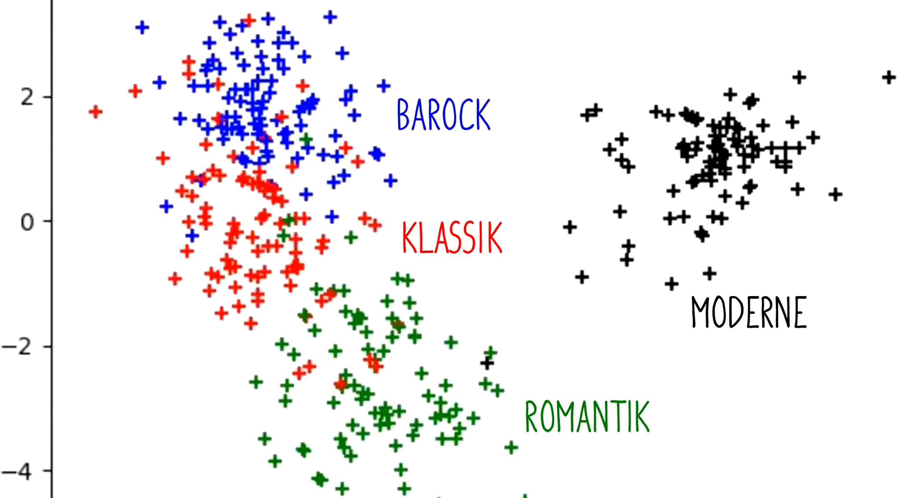 <small> * Weiss, Christof, und Meinard Müller. „Tonal complexity features for style classification of classical music“. In ICASSP 2015, 688–92. IEEE, 2015. – Einführend: [Video](https://klartext-preis.de/preistraeger/dr-christof-weiss/). * Music Recommender Systems allgemein: Schedl, Markus et al.: „Music Recommender Systems“. In _Recommender Systems Handbook_, herausgegeben von Francesco Ricci, Lior Rokach, und Bracha Shapira, 453–92. Boston, MA: Springer US, 2015. https://doi.org/10.1007/978-1-4899-7637-6_13. * Spotify speziell: Sophia Ciocca, "How Does Spotify Know You So Well?", Medium.com, 2017, https://medium.com/s/story/spotifys-discover-weekly-how-machine-learning-finds-your-new-music-19a41ab76efe </small> --- ### Rechercheaufgabe B: Schubert <a href="https://www.youtube.com/watch?v=R69JYEfCSeI"><img height="200" data-src="img/schubert.png"></a> * [Video](https://www.youtube.com/watch?v=R69JYEfCSeI) und [Artikel](https://www.nbcnews.com/mach/science/ai-can-now-compose-pop-music-even-symphonies-here-s-ncna1010931) * Erläutern Sie in einem zusammenhängenden, kurzen Text (etwa 100 Wörter) anhand einiger Argumente, die Ihnen besonders wichig erscheinen, ob hier ein Verfahren der Künstlichen Intelligenz erfolgreich für das Komponieren klassischer Musik eingesetzt wurde oder nicht. --- ### Fragen (1a) * War der Algorithmus Ihrer Meinung nach erfolgreich? (J/N/T) --- ### Fragen (1b) * Welche Argumente sprechen für den Erfolg des Algorithmus? * Ich habe selbst nicht herausgehört, dass es algorithmisch generierte Musik war * Die ausgebildeten Musiker schienen überzeugt * Die Musik klingt wirklich wie klassische Musik * Die Musik klingt wirklich wie Schubert * Die Musik klingt ästhetisch ansprechend * Die Musik ist sinnvoll bezüglich Rhythmus, Tonart und/oder Melodie * Musik ist selbst regelhaft, sodass ein Algorithmus das gut kann --- ### Fragen (1c) * Welche Argumente sprechen gegen den Erfolg des Algorithmus? * Der Algorithmus ist nicht in der Lage, musikalische Übergänge zu gestalten * Der Algorithmus beachtet die Gesamtstruktur der Symphonie nicht * Die resultierende Musik wiederholt sich zu sehr * Die Musik klingt eben doch nicht ganz wie Schubert * Der Algorithmus hat nur die Noten generiert, nicht die aufgeführte Musik * Der Komponist hat aus mehreren Optionen die beste herausgesucht * Ob Schubert die Symphonie genau so weitergeführt hätte, ist zweifelhaft --- ### Fragen (2a) * Finden Sie, dass man dem Algorithmus Kreativität zusprechen kann? --- ### Fragen (2b) * Welche Argumente sprechen Ihrer Meinung nach für die Kreativität? * Der Algorithmus hat neue Strukturen generiert. * Der Algorithmus hat neue Melodien generiert. * Dem Algorithmus gehen nie die Ideen aus * Das Ergebnis war nicht vorhersehbar. --- ### Fragen (2c) * Welche Argumente sprechen Ihrer Meinung nach gegen die Kreativität? * Letztlich setzt der Algorithmus nur zufällig vorhandene Muster neu zusammen * Ein KI-Algorithmus ist wie ein Instrument, erst gemeinsam mit einem Menschen gelingt es wirklich * Ein KI-Algorithmus hat keine Individualität / Originalität * Der Algorithmus kann keine Emotionen berücksichtigen * Der Algorithmus "versteht" die Musik nicht wirklich * Es bleibt "gutes Handwerk" ohne Aussage / Intention * Der Algorithmus kann sich nicht durch Erfahrung in der Welt inspirieren --- ### Antwort-Beispiel >Ja, das Verfahren der Künstlichen Intelligenz wurde erfolgreich für das Komponieren klassischer Musik eingesetzt, da es wirklich so klingt, als sei es vom ursprünglichen Komponisten der Symphonie stammt. Es wurde erwähnt eine K.I. könnte ja niemals an die kreativen Fähigkeiten eines Menschen rankommen oder diese eben ersetzen, aber ich finde eine K.I. muss hierfür ja nicht eine angeborene „menschliche“ Kreativität haben, wenn das Verfahren doch nachweislich funktioniert hat. Ich fand den Satz, dass selbst die schönste Musik letztendlich nur ein Code sei, da ganz passend. Ein weiteres gutes Argument dafür ist, dass eine K.I. im Gegensatz zu einem Menschen ja nie müde wird und somit kontinuierlich Songs komponieren könnte. --- ### Antwort-Beispiel >Meiner Meinung nach wurde hier mithilfe von Künstlicher Intelligenz erfolgreich ein Musikstück geschrieben. Ein erstes Argument dafür sehe ich darin, dass für mich beim Hören die von der KI komponierten Teile nicht von denen von Schubert komponierten Teilen zu unterscheiden war. Zwar bin ich auch nicht wirklich ein Fan von klassischer Musik, aber selbst der Musiker im Video sagt, er könne beides nicht auseinander halten, was definitiv ein Indiz dafür ist, dass die Künstliche Intelligenz beim Komponieren erfolgreich war. Des Weiteren hätte ich bei künstlich erzeugter Musik erwartet, dass sie viel eintöniger und langweiliger klingen würde, als das gezeigte Stück, das viele Variationen und verschiedene Instrumente beinhaltete. Zwar werden im Video auch negative Kommentare gezeigt, die das Stück unter anderem als "Müll" bezeichnen, dem hätte ich aber entgegenzusetzen, dass dieses Stück sehr viel anspruchsvoller klingt, als vieles, was heutzutage im Radio läuft und von echten Menschen produziert wurde. Daher kann man meiner Meinung nach schon sagen, dass die KI hier erfolgreich eingesetzt wurde. --- ### Anwort-Beispiel >Wurde eine künstliche Intelligenz erfolgreich eingesetzt um Schuberts klassisches Werk (Symphony) zu vollenden? Ich bin der Ansicht teilweise. Zu aller Erst sollte gesagt sein, dass dies ein riesiger Fortschritt ist. Ein Werk so zu vollenden ohne auch nur einmal mit dem original Komponisten gesprochen oder einen „live“ Einblick in seine Vorgehensweise bekommen zu haben, ist an sich schon ein (Kunst)werk. Durch die neuste Technologie wird uns ein Einblick in die Intentionen und Gedanken eines Menschen gegeben, der sich längst nicht mehr selber dazu äußern kann. Durch Muster und Wiederholungen werden Gedankengänge und die daraus resultierenden Endprodukte aufs kleinste und einfachste heruntergebrochen. Doch für das Beispiel von Schubert bedarf es noch weitere Experten, die wissen wie sie mit dem herausgezogenen Datenset weiterverfahren. So hat die AI nicht all die Arbeit getan, sondern Cantor entwarf das finale Stück. Demnach bleibe ich bei meiner Meinung und sage die künstliche Intelligenz hat eine enorme Rolle gespielt für den Erfolg des Projektes, jedoch klappt es (noch) nicht ganz ohne Feinschliff um es auf 100% zu bringen. -- ## Thema 5: Digitale Kunstgeschichte --- ### Rechercheaufgabe (A) * Bitte schauen Sie das folgende Video, in dem Peter Bell die Digitale Kunstgeschichte und Critical Machine Vision vorstellt. Der Vortrag, um den es geht, läuft im Video von Minute 11:30 bis 55:55. * Direkter Link zum Startpunkt: https://www.youtube.com/watch?v=wrMvOsDHB7s&t=690s * Welche Unterschiede, welche Ähnlichkeiten sehen Sie zu den anderen Teilbereichen der Digital Humanities, die wir schon kennengelernt haben, also der Digitalen Edition, der Computational Literary Studies und der Digitalen Musikwissenschaft? (Abgesehen vom offensichtlichen Unterschied, dass es hier um visuelle Medien geht, nicht um Text oder Musik.) Nennen Sie in Stichpunkten 2-3 Unterschiede und 2-3 Ähnlichkeiten. --- ### Ähnlichkeiten: Gegenstände * Multimedialität (Text, Bild, Audio) <!-- .element: class="fragment" data-fragment-index="1" --> * Es werden teils sehr große Datenmengen berücksichtigt <!-- .element: class="fragment" data-fragment-index="2" --> * Große Bedeutung der Metadaten <!-- .element: class="fragment" data-fragment-index="3" --> * Interaktive Publikation / Präsentation der Daten in Datenbanken <!-- .element: class="fragment" data-fragment-index="4" --> --- ### Ähnlichkeiten: Methoden * Statistische Analysen (Distant Reading => Distant Viewing) <!-- .element: class="fragment" data-fragment-index="1" --> * Ähnlichkeitsanalysen (auf Vektorbasis), auch für Künstleridentifikation <!-- .element: class="fragment" data-fragment-index="2" --> * Es gibt immer auch Fehler, keine (quantitative) Methode ist 100% exakt <!-- .element: class="fragment" data-fragment-index="3" --> * Machine Learning / Neuronale Netze zur Analyse großer Datenmengen <!-- .element: class="fragment" data-fragment-index="4" --> * Generative Ansätze: Algorithmen, um Musik, Texte, Bilder zu generieren <!-- .element: class="fragment" data-fragment-index="5" --> --- ### Ähnlichkeiten: Perspektiven * Digitalisierung schützt und archiviert fragile Gegenstände <!-- .element: class="fragment" data-fragment-index="1" --> * Präsentation der Gegenstände auf eigenen Webseiten (Textedition, Musikedition, Korpora, Bilddatenbanken) <!-- .element: class="fragment" data-fragment-index="2" --> * An digital vorliegenden Gegenständen werden Eigenschaften messbar <!-- .element: class="fragment" data-fragment-index="3" --> * Arbeitsschritte: Digitalisierung, Erschließung, Edition, Analyse, Generierung <!-- .element: class="fragment" data-fragment-index="4" --> * Nutzung von Informationsvisualisierung für Analyse und Veranschaulichung <!-- .element: class="fragment" data-fragment-index="5" --> * Ständige Weiterentwicklung und Verbesserung (=Forschung) <!-- .element: class="fragment" data-fragment-index="6" --> --- ### Unterschiede * Spezifische Metadatenstandards, bspw. CIDOC-CRM (Comité international pour la documentation / Conceptual Reference Model): siehe http://www.cidoc-crm.org/ <!-- .element: class="fragment" data-fragment-index="1" --> * Spezifische Eigenschaften von Bildmedien, die digitalisiert, erkannt und analytisch erfasst werden müssen: Farbe, Komposition / Bildstruktur, Ikonografie, dargestellte Objekte, 3D-Aspekte, Haptik <!-- .element: class="fragment" data-fragment-index="2" --> * Cross-mediales Generieren von Inhalten: Captions (Text) auf Grundlage von Gemälden (Bild) <!-- .element: class="fragment" data-fragment-index="3" --> * "Style Transfer" beim Generieren neuer Daten vor allem mit Bildern und Videos <!-- .element: class="fragment" data-fragment-index="4" --> * Optimierung von Fotos (aber: Nachkorrektur von OCR mit Sprachmodellen) <!-- .element: class="fragment" data-fragment-index="5" --> --- ### Diskussionswürdige Aspekte * Die Gefahr der Diskriminierung durch Algorithmen ist bei Bildern größer: bspw. Facial Recognition (aber: bspw. Forensic Linguistics) <!-- .element: class="fragment" data-fragment-index="1" --> * Die Rolle der Interpretation und der Ästhetik ist bei kunsthistorischen Analysen größer als in der Musik- oder Literaturwissenschaft <!-- .element: class="fragment" data-fragment-index="2" --> * Die (digitale) Kunstgeschichte legt einen stärkeren Fokus auf die genaue Analyse von Einzelwerken als die Musik- oder Literaturwissenschaft <!-- .element: class="fragment" data-fragment-index="3" --> * Die digitale Kunstgeschichte ist eine jüngere Entwicklung als Computational Literary Studies oder Digitale Musikwissenschaft <!-- .element: class="fragment" data-fragment-index="4" --> * Critical Machine Vision (kritische, geisteswissenschaftliche Reflexion der digitalen Methoden): Wie würde das in der digitalen Musikwissenschaft oder den Computational Literary Studies funktionieren? <!-- .element: class="fragment fade-in-then-out" data-fragment-index="5" --> --- ### (B) Rechercheaufgabe "ARTIGO" * Besuchen Sie die folgende Webseite, auf der Sie eine Anwendung namens "ARTIGO (Tagging Game)" aus der digitalen Kunstgeschichte finden, die Spiel und Wissenschaft verbindet: https://www.artigo.org/taggingGame.html * Sie können die Sprache nach Wunsch einstellen (Deutsch, Englisch, Französisch oben links). Die Grundidee des Spiels ist es, durch möglichst präzise und sinnvolle Schlagworte zu einem Bild möglichst viele Punkte zu bekommen. Ein Bild wird jeweils 60 Sekunden lang angezeigt, Sie können darunter in das kleine Textfeld Schlagworte eintippen. Spielen Sie das Spiel mit mindestens 5 verschiedenen Bildern. * (1) Beschreiben Sie ihre Erfahrung damit in 2-3 Sätzen. Wie hoch war ihre beste Punktzahl? * (2) Inwiefern enstehen hier vielleicht bessere, inwiefern vielleicht weniger gute Daten, als in dem Beispiel der Bildbeschreibungen, die Peter Bell im zweiten Teil seines Vortrags (insbesondere im Abschnitt ab Minute 50:20 im Video) besprochen hat hat? --- ### Erfahrungen mit ARTIGO * Durch den spielerischen Aspekt der Website ist die Motivation hoch. <!-- .element: class="fragment" data-fragment-index="1" --> * Man lernt etwas über die Gemälde und kann sich so weiterbilden. <!-- .element: class="fragment" data-fragment-index="2" --> * Es ist schwierig vorauszusagen, welche Wörter Punkte bringen. <!-- .element: class="fragment" data-fragment-index="3" --> * Die trivialen Schlagworte brachten eher Punkte als die schwierigen. <!-- .element: class="fragment" data-fragment-index="4" --> * Die Benutzungsoberfläche ist intuitiv und leicht verständlich. <!-- .element: class="fragment" data-fragment-index="5" --> * Ich war überrascht, wie viel Spaß das Spiel macht. <!-- .element: class="fragment" data-fragment-index="1" --> * Bei abstrakten Gemälden waren schwieriger als bei gegenständlichen, Punkte zu bekommen. <!-- .element: class="fragment" data-fragment-index="6" --> * Die 60 Sekunden waren bei einigen Bildern viel zu kurz. <!-- .element: class="fragment" data-fragment-index="7" --> --- ### Vergleich ARTIGO / generierte Bildbeschreibungen --- ### Argumente für bessere Daten bei ARTIGO * Input von den unterschiedlichsten Menschen, vielfältigere Meinungen (?) <!-- .element: class="fragment" data-fragment-index="1" --> * Bei den Gemälden sind Probleme wie Sexismus / Rassimus weniger wahrscheinlich <!-- .element: class="fragment" data-fragment-index="2" --> * Es entstehen detailreichere Angaben <!-- .element: class="fragment" data-fragment-index="3" --> * Durch die Anreizstruktur des Spiels entstehen gute Daten <!-- .element: class="fragment" data-fragment-index="4" --> * Durch die Einzelwörter entstehen objektivere Daten als bei Phrasen <!-- .element: class="fragment" data-fragment-index="5" --> --- ### Argumente für schlechtere Daten bei ARTIGO * Wegen des Zeitdrucks werden weniger durchdachte Stichworte genannt <!-- .element: class="fragment" data-fragment-index="1" --> * Die einzelnen Schlagwörter sind oberflächlicher als die Phrasen <!-- .element: class="fragment" data-fragment-index="2" --> * Es können auch viele Fehlangaben gemacht werden (?) <!-- .element: class="fragment" data-fragment-index="3" --> * Es geht offenbar eher um Quantität als um Qualität (?) <!-- .element: class="fragment" data-fragment-index="4" --> * Die Betrachter können die Bilder sehr unterschiedlich interpretieren <!-- .element: class="fragment" data-fragment-index="5" --> * Die Betrachter sind oft keine Experten für Kunst <!-- .element: class="fragment" data-fragment-index="6" --> -- ## Thema 6: Textkodierung --- ### Nachfragen zu: "Datenformate in den DH" (1) * Warum gibt es so viele Auszeichnungssprachen / Datenformate? * Welche Anwendungsgebiete gibt es jeweils? * Was sind die Vorteile der verschiedenen Formate? * Wie kann man zwischen den Formaten konvertieren? * Wie läuft der Entwicklungsprozess von Auszeichnungssprachen? * Wie arbeitet man mit den diversen Datenformaten beim Programmieren? * Mehr zu einzelnen Datenformaten: --- ### Warum gibt es so viele Auszeichnungssprachen / Datenformate? <img height="450" data-src="img/standards.png"> <br/>Quelle: https://xkcd.com/927/ --- ### Mehr zu einzelnen Datenformaten: * Texte: HTML (mit CSS und JS), Mediawiki, LaTex * Bilder: Pixelgrafiken, SVG, * Anderes: JSON, MathML, JSON, KML * => siehe: [DH-Trier Bibliographie, "Datenformate"](https://www.zotero.org/groups/2162827/dh-bibliographie_trier/collections/WLQCTV7M) --- ### Welche Anwendungsgebiete gibt es jeweils? * XML: beliebige semi-strukturierte Daten (Metasprache, sehr mächtig) * JSON: beliebige semi-strukturierte Daten * CSV: beliebige semi-strukturierte Daten * Markdown: (schwach strukturierte) Dokumente (sehr einfach) * HTML: (stärker strukturierte) Dokumente (einfach) * Mediawiki (recht einfach) * LaTex: Dokumente (recht mächtig) * BibTex: bibliographische Daten (spezialisiert) * KML: geographische Daten (spezialisiert) --- ### Wie kann man zwischen Formaten konvertieren? * Oxgarage (Webservice): https://oxgarage.tei-c.org/ * pandoc (CL-Tool): https://pandoc.org/ --- ### Verschiedene Datenformate beim Programmieren (Python) * Dictionary (core) <=> JSON * DataFrame (pandas) <=> Tabelle / CSV-Datei * XML: lxml * CSV: csv * HTML: html * SVG/PNG: pygal, matplotlib, seaborn, bokeh... * KML: folium etc. --- ### Nachfragen zum Screencast<br/>"Text Encoding Initiative" * **Community und Standard-Entwicklung** * Kodierungspraxis in TEI und Kodierungs-Schulen * Mehr zum teiHeader / zu den verschiedenen Modulen * **Wie funktioniert Validierung?** * Einsatz-/Anwendungsbeispiele für TEI: für Geisteswissenschaften oder universell * Alternativen zu XML-TEI? (HTML) * Interoperabilität und Nachnutzbarkeit von TEI? * Ausschnitt aus einem Member's Meeting * **(Tools für) Editieren, Publizieren, Visualisieren von XML-TEI** --- ### Validierung 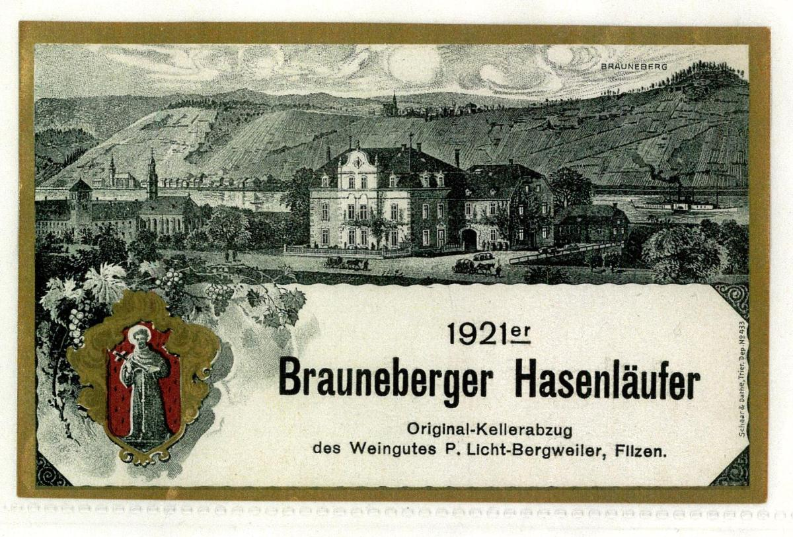 * Mehr Informationen: [Screencast "Validierung"](https://video.uni-trier.de/Panopto/Pages/Viewer.aspx?id=8e11903d-800a-437d-85c5-ac840117f733) * Beispiel: Projekt "Weinetiketten im Wandel" des TCDH --- ### Entwicklung von TEI 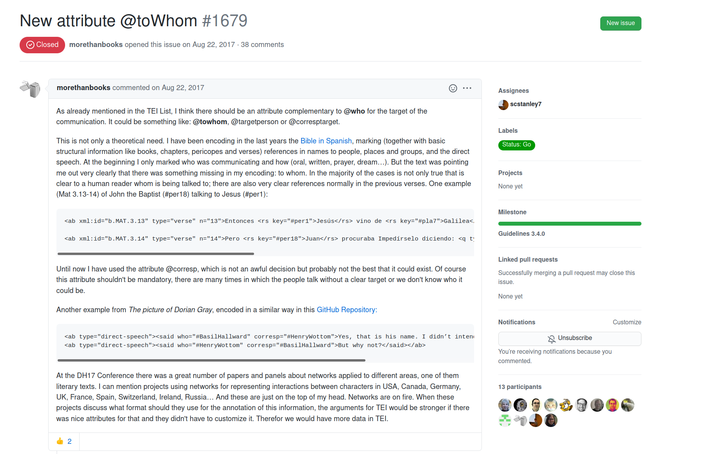 * Community-basiert; der TEI Technical Council koordiniert * Beispiel @toWhom: https://github.com/TEIC/TEI/issues/1679 --- ### Tools für XML-TEI * Editieren * oXygen Editor: https://www.oxygenxml.com/xml_editor/ (auch mit Ediarum Arbeitsumgebung) * Visual Studio Code: https://code.visualstudio.com/ (mit 'Scholarly XML'-Plugin) * jEdit: http://jedit.org/ (mit TEI-Plugin) * Atom: https://atom.io/ (mit XML-Plugins) * TextGrid Lab: https://textgrid.de/ * FuD (TCDH + SFB): https://fud.uni-trier.de/ * Publizieren * Versioning Machine: http://v-machine.org/, bspw: http://v-machine.org/samples/autumn.html * TEI Publisher: https://teipublisher.com, bspw: * GAMS (Graz Asset Manager): https://gams.uni-graz.at/, bspw: https://gams.uni-graz.at/context:mws/ * Spezielle Lösungen mit eXist-Datenbank + Frontend, bspw: DraCor: https://dracor.org/ --- ### Rechercheaufgabe zu den Guidelines der TEI 1. Mit welchem Element wird ein Seitenumbruch markiert? 2. Wozu dient das Element "sense"? In welchem Unterkapitel / Kapitel wird es näher beschrieben, und worum geht es dort allgemein? 3. Mit welchem Element, mit welchen Elementen, oder mit welcher Kombination von Elementen und Attributen würden Sie den Namen einer Person in einem Text auszeichnen? 4. Worin liegen die Unterschiede zwischen dem Element "said" und dem Element "quote"? 5. Angenommen, Sie möchten einen Brief kodieren. Welche dafür speziell geeigneten Elemente finden Sie in den Guidelines? Wie haben Sie diese identifiziert? --- ### Element für Seitenumbruch? * `<pb>` weist auf den Anfang einer neuen Seite hin. * Dort kann man dann noch @break, @ed oder @edRef anhängen. --- ### Wozu dient das Element "sense"? * Siehe Kapitel 9.2 "The Structure of Dictionary Entries" * `<sense>` sammelt alle Informationen einer Wortbedeutung in einem Lexikoneintrag, beispielweise Definitionen, Beispiele oder Übersetzungsalternativen. --- ### Namen einer Person in einem Text auszeichnen? * Siehe Kapitel 13.2.1 Personal Names * `<persName>` beinhaltet Strings, die sich auf die Person (Name, Vorname, Titel etc.) beziehen * Darin Unterscheidungen: `<surname>`, `<forename>`, `<roleName>`, `<genName>` (generational name component) * Alternative: `<name type="person"/>` --- ### Unterschiede zwischen "said" und "quote"? * `<said>` * direkte Rede oder Gedanken einer Person im Text * Attribute: @aloud und @rend * `<quote>` * für Zitate * keine besopnderen Attribute werden verwendet --- ### Kodieren eines Briefs? * Kapitel [4.2 "Elements Common to All Divisions"](https://www.tei-c.org/release/doc/tei-p5-doc/en/html/DS.html#DSDTB) * `<opener>` * `<closer>` * `<dateline>` * `<signed>` * Kap. 10.7 "Physical Description" * `<physDesc>` * Kap. 11.3.2.1 "Document Hands": * `<handNote>` * `<handShift>` -- ## Thema 7: Topic Modeling --- ### Fragen zu "Signs at 40" 1. Wie heißt die Autorin des Artikels, in dem das Topic mit dem Label "Latin America" wichtiger ist als in allen anderen Artikeln? 2. Welche beiden Topics sind in der Zeitschrift Signs insgesamt am wichtigsten? 2. In welchen Topics spielt das Wort "technology" eine Rolle? 3. Welche 2-3 Topics verlieren in der Zeitschrift ab den 1990er Jahren besonders deutlich an Wichtigkeit? Welche 2-3 Topics gewinnen ab den 1990er Jahren an besonders deutlich an Wichtigkeit? --- #### 1. Wie heißt die Autorin des Artikels, in dem das Topic mit dem Label "Latin America" wichtiger ist als in allen anderen Artikeln? * "Die Autorin heißt Marysa Navarro. Ich habe sie gefunden, indem ich in der Übersicht auf den Kreis geklickt habe, indem Latin größer geschrieben ist als der Rest." --- #### 2. Welche beiden Topics sind in der Zeitschrift Signs insgesamt am wichtigsten? * "Die beiden Topics "the social" und "Women's role" sind insgesamt am bedeutendsten, da sie in der Topics List bei Ordnung nach größter Proportion der Topics die beiden größten sind. --- #### 3. In welchen Topics spielt das Wort "technology" eine Rolle? * "Technology" spielt besonders bei "Information Technology", "Domestic and Urban" und bei "Science" eine Rolle. Man findet die Antwort über den "Word"-Index, wenn man dort "technology" eingibt. --- #### 4. Welche 2-3 Topics verlieren, welche gewinnen, in der Zeitschrift ab den 1990er Jahren besonders deutlich an Wichtigkeit? * Die Topics "Quantitative Methods", "Psychology and women" und "Labor" verlieren ab den 90er Jahren an Wichtigkeit. * Die Topics "Politics of difference", und "Globalization" hingegen nehmen seit den 90er Jahren an Wichtigkeit zu. * Zu erkennen ist dies bei Overview unter dem Reiter "Topics over time". --- ### Rückfragen zum Topic Modeling (1) * (Wie funktioiniert) Latent Dirichlet Allocation? * (Wie funktioniert) die iterative Zuordnung von Wörtern zu Topics (= Gibbs Sampling) * Was hat es genau mit der Bayes'schen Statistik auf sich? * Kann man Topic Modeling auch mit Lyrik, auf Audio-, Bild- oder Videodaten anwenden? (Ja!) * Erkennung von Sarkasmus oder Parodien * Erkennung von Zweideutigkeiten / versteckten Emotionen mit TM? * TM mit kleinerer Textsammlung? (möglich mit vorhandenem Modell) --- ### Rückfragen zum Topic Modeling (2) * Verhältnis qualitative Inhaltsanalyse zu Topic Modeling * Mehrwert einer solchen Analyse gegenüber Inhaltsanalyse? * Dokumente x Topics und Topics x Wörter * Explorative Visualisierung * Andere Programme außer Mallet und gensim? * Wie wird die optimale Anzahl an Topics festgelegt? * Topic Modeling Workflow an einem Beispiel * Wie funktioniert die Evaluation genau? --- ### Inferenz-Problem (1) 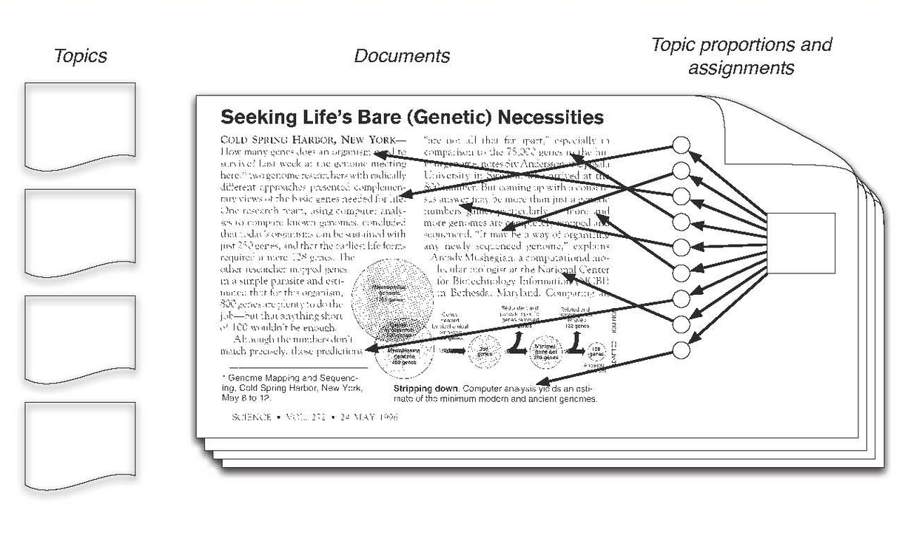 <br/>(Dokumente; Blei 2012) --- ### Inferenz-Problem (2) <img height="400" data-src="img/tm_blei_model.png"> <br/>(Topics und Wörter; Blei 2012) --- ### Topic Modeling ("plate notation") <br/>(Wörter, Topics, Dokumente, Hyperparameter) --- ### Dirichlet Distributions 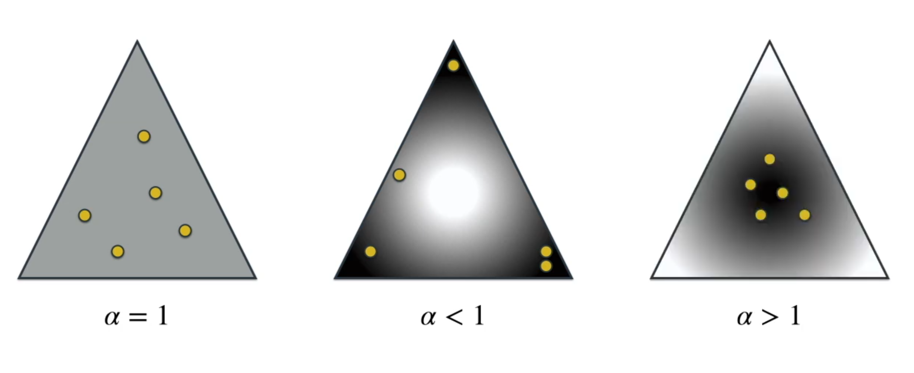 <br/>(Serrano 2020) --- ### Gibb's Sampling (1) <img height="400" data-src="img/tm_steyvers1.png"> <br/>(Missing Assignments; Steyvers and Griffith 2012) --- ### Gibb's Sampling (2) <img height="400" data-src="img/tm_steyvers2.png"> <br/>(Estimated Assignments; Steyvers and Griffith 2012) --- ### Video-Empfehlung 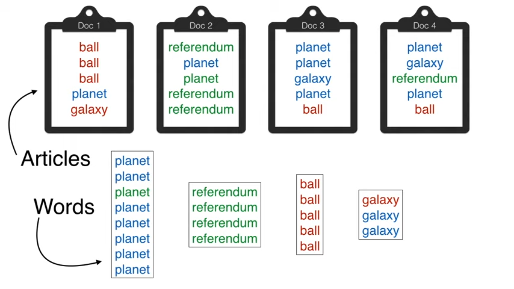 * (1) Luis Serrano: "Latent Dirichlet Allocation",<br/>https://www.youtube.com/watch?v=T05t-SqKArY * (2) Luis Serrano: "Gibbs Sampling",<br/>https://www.youtube.com/watch?v=BaM1uiCpj_E --- ### Anwendungsszenarios für TM --- ### Stephen King >Da ich großer Fan von Stephen King bin und auch einige seiner Romane besitze, könnte ich mir im Vergleich der einzelnen Werke mithilfe des Topic Modeling durchaus interessante Ergebnisse vorstellen. Beispielsweise könnte so ermittelt werden, welche Themen in welchen Büchern eine größere Rolle spielen, eventuell auch von solchen, von denen man es gar nicht erwarten würde. Da in Kings Werken hinzukommend viele Geschichten Anspielungen auf andere Romane von ihm machen oder auch dieselben Orte/Szenarien verwendet werden, könnte man auch in dieser Hinsicht neue Erkenntnisse gewinnen, was ich mir sehr spannend vorstelle. --- ### Liedtexte >Welche Topics sind am Häufigsten/Wichtigsten in den Liedtexten der deutschen Charts zum Beispiel im Zeitraum des letzten Jahres und gibt es einen signifikanten Anteil an Topics mit zum Beispiel diskriminierenden oder stigmatisierendem Vokabular. --- ### Twitter >Ich fände es interessant zu sehen was heraus kommt, wenn man zum einen, ganz twitter analysiert und die Ergebnisse dann mit Analysen kleinerer Nutzergruppen (beispielsweise aufgeteilt nach Ethnischer Zugehörigkeit oder Altersgruppe) vergleicht. Inwiefern unterscheiden sich die Twitter Tonics unterschiedlicher Altersgruppen? --- ### Elektromobilität in der Presse >Verschiedene Zeitungen danach zu untersuchen, wie sich die Berichterstattung über Elektroautos über die Jahre verändert hat und inwiefern diese im Zeitverlauf an Relevanz gewonnen haben. Hierbei könnte man ein Topic "Elektroautos" modellieren, welches Wörter wie zum Beispiel "Stromer", "Elektrofahrzeug", "Lithium-Ionen-Batterie", "Emissionsfreiheit", etc. enthält und würde als Textsammlung alle Artikel deutschsprachiger Zeitungen ab dem Jahr 2000 (beispielsweise) nehmen. Anschließend würde man die einzelnen Artikel danach analysieren, ob die Wörter aus dem Topic in den Artikeln vorkommen und könnte dann feststellen, zu welchen Zeitpunkten die Berichterstattung über Elektroautos zu- oder abgenommen hat. [...] Diese Erkenntnisse könnte man dann mit zu dieser Zeit aktuellen Ereignissen in der E-Mobilitätsbranche in Verbindung setzen. --- ### Bundestagsreden >Das übergeordnete Ziel besteht in der Extraktion politischer Positionierungen der Parteien im Bundestag und dem Vergleich dieser Positionen. Zu diesem Zweck werden die vom Bundestag online zur Verfügung gestellten Plenarprotokolle weiter aufbereitet und mittels Topic-Modeling-Verfahren untersucht. Zunächst soll mittels politikwissenschaftlicher Literatur ein theoretischer Rahmen erstellt werden, der als Basis für die Hypothesenbildung der politischen Positionsentwicklung der Parteien dient. Aus den ungenügend strukturierten Protokollen soll anschließend ein einheitlich ausgezeichneter, in Parteien aufgeteilter Datensatz entstehen, aus dem mittels Topic-Modeling die wichtigsten epochalen und parteilichen Themen herausgefiltert werden. [...] Abschließend erfolgt ein Abgleich mit dem theoretischen Rahmen und die Beantwortung der Frage, ob eine automatische Ermittlung politischer Tendenzen mit den angewendeten Verfahren einen Gewinn für die Forschung darstellen kann. -- ## Thema 8: Linked Open Data --- ### Lektüreaufgabe (Tutorial) * Bitte arbeiten Sie das folgende Tutorial zu "Linked Open Data" sorgfältig durch. * Es ist Teil der Plattform "The Programming Historian", richtet sich aber nicht nur an Historier:innen. * Hier der Link: https://programminghistorian.org/en/lessons/intro-to-linked-data * Wir werden in der Sitzung offene gebliebene Fragen besprechen, bitte notieren Sie diese daher wie gewohnt als Lösung zu dieser Aufgabe. --- ### Nachfragen (1): Grundlagen * Was sind konkrete Anwendungsszenarien für LOD? * Was genau ist der Unterschied zwischen URL und URI? * Warum verwendet man Triples (Subjekt-Prädikat-Objekt)? * Was sind RDF/XML und Turtle? * Was ist ein SPARQL-Endpoint? * Worin liegt der Unterschied zwischen Wissensgraph und Ontologie? * Wie kann man die Beziehung zwischen Wikipedia und Wikidata beschreiben? * Was ist das "5-star-rating-system" von Tim Berners-Lee? * Wie funktioniert das "semantic reasoning"? --- ### Was sind konkrete Anwendungsszenarien für LOD? * In den Digital Humanities * Digitale Literaturgeschichte: Projekt "Mining and Modeling Text" * Kulturelles Erbe: Weinetiketten im Wandel * Digitale Edition: Modellierung von Korrespondenz-Netzwerken * Computerlinguistik: Repräsentation enzyklopädisches Weltwissen für NLP-Tasks * uvm. * Allgemein gesprochen * Wenn eine relationale Datenbank zu unflexibel wäre * Wenn die Daten auch über den eigenen Bestand hinaus vernetzt werden sollen --- ### Von Triples zum Netzwerk 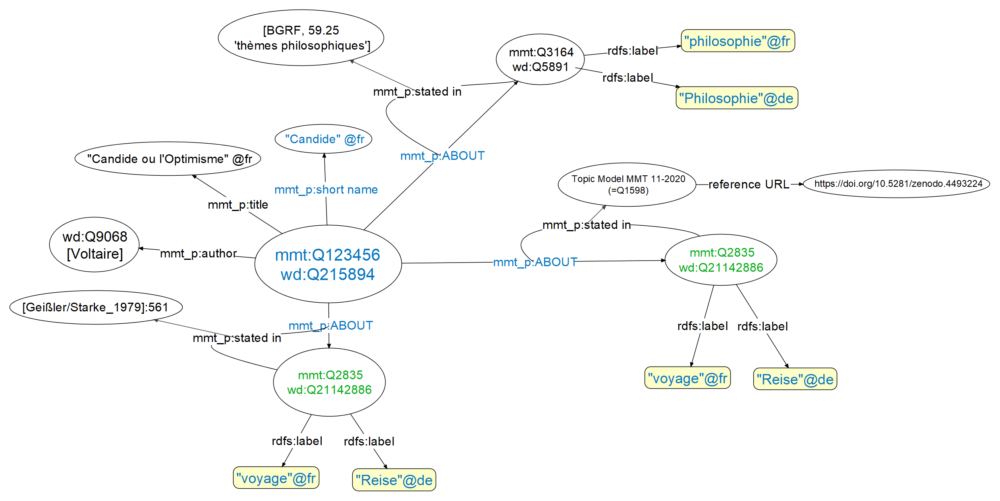 --- ### Was genau ist der Unterschied zwischen URL und URI? * URL * Uniform Resource Locator (Link) * Nur für Webseiten und Ähnliches (HTTP, FTP, MAILTO) * Siehe: https://de.wikipedia.org/wiki/Uniform_Resource_Locator * URI * Uniform Resource Identifier * Zur Identifikation beliebiger Entitäten, Konzepte, Gegenstände * Häufig in Form einer URL, die aber nicht auf eine HTML-Seite zeigen muss * URLs sind eine Teilmenge der URIs --- ### Wo findet man Ontologien und Identifier? * Ontologien: https://lov.linkeddata.es/dataset/lov/ * Identifier: Bibliotheken und Services * Personen: * Gemeinsame Normdatendatei (GND) * Virtual Authority File (VIAF) * Orte * Getty Thesaurus of Geographical Names (TGN) * Geonames.org * Dokumente * Digital Object Identifier (und: GND, ISBN) Allgemein * Wikidata (inkl. viele Verweise auf andere URIs) --- ### Warum verwendet man Triples (Subjekt-Prädikat-Objekt)? * Ziel ist es, alle Informationen auf eine bestimmte Relation zwischen einer Entität und einer anderen Entität oder einem Wert zu reduzieren * Einfaches Beispiel * Entität 1 = Subjekt, bspw. "Karl Marx" * Relation = Prädikat, bspw. "geboren in" oder "geboren am" * Entität 2 / Wert = Objekt, bspw. "Trier" (Entität) oder "5.5.1818" (Wert) * Man kann mit dieser einfachen Struktur fast alle Informationen ausdrücken * Voraussetzung ist, dass geeignete Begriffe für die Relationen verfügbar sind (siehe Ontologie) --- ### Was sind RDF/XML und Turtle? * RDF * Resource Description Framework: abstraktes Datenmodell für LOD * Regeln: u.a.: Statements sind Tripel aus Subjekt, Prädikat, Objekt * Oder: * RDF-Serialisierungen * RDF/XML: Triples in XML ausgedrückt; validierbar * Turtle: Kompakte Schreibweise für Triples --- ### Beispiel: RDF/XML vs. Turtle 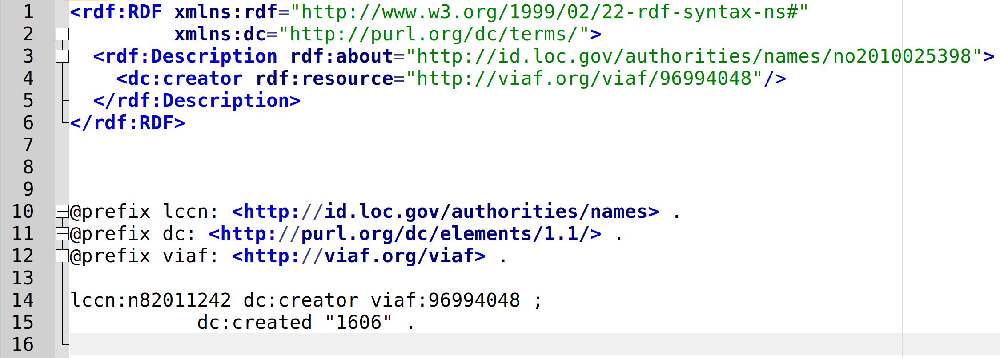 --- ### Worin liegt der Unterschied zwischen Wissensgraph und Ontologie? * Wissensgraph * Wissensgraph ist ein anderer Begriff für einen LOD-Datenbestand * Aus einer Menge von LOD-Triples entsteht ein Netzwerk von Informationen * Das Wort "Graph" in Wissensgraph bezieht sich auf die Netzwerkstruktur * Ontologie * Eine Ontologie ist eine organisierte Menge definierter Begriffe, die eine Domäne abbilden * Beispiel für Entität "Person": Geschlecht, Geburtsort, Geburtstag, Sterbeort, Sterbetag, Tätigkeit, Vater, Mutter, Kind(er). * Fazit: Ontologien sind die semantische Grundlage für Wissensgraphen --- ### Wie kann man die Beziehung zwischen Wikipedia und Wikidata beschreiben? * Wikipedia ist menschenlesbar, Wikidata ist maschinenlesbar * Wikipedia gibt es in vielen Sprachen; Jede Wikidata-Seite ist mehrsprachig * Wikidata enthält Informationen aus Wikipedia in strukturierter Form * Beispiel Karl Marx: * Wikipedia: https://de.wikipedia.org/wiki/Karl_Marx * Wikidata: https://www.wikidata.org/wiki/Q9061 --- ### Was ist das "5-star-rating-system"<br/>von Tim Berners-Lee? * 5 Kriterien für gute Linked Open Data * ★ Available on the web with an open licence * ★★ In addition, available as machine-readable, structured data * ★★★ In addition, using a non-proprietary format * ★★★★ In addition, using open standards from W3C (like RDF) * ★★★★★ In addition, link your data to other people's data * Siehe: https://www.w3.org/DesignIssues/LinkedData.html --- ### Was ist ein SPARQL-Endpoint? * Ein SPARQL-Endpoint ist eine Abfragemöglichkeit für einen LOD-Datenbestand * SPARQL ist eine Abfragesprache für LOD-Daten * In SPARQL kann man sehr präzise Abfragen formulieren (siehe unten) --- ### Lektüreempfehlung <br/> Andreas Dengel (Hg.): Semantische Technologien. Grundlagen. Konzepte. Anwendungen. Spektrum Verlag, 2012. --- ### SPARQL ausprobieren <a href="https://query.wikidata.org/#select%20distinct%20%3Fitem%20%3FitemLabel%20%3FitemDescription%20where%20%7B%0A%20%20%20%20%3Fitem%20wdt%3AP31%20wd%3AQ5%3B%20%20%23%20instance%20of%2C%20human%0A%20%20%20%20%20%20%20%20%20%20wdt%3AP19%20wd%3AQ3138%3B%20%20%23%20%20born%20in%2C%20Trier%20%0A%0A%20%20%20%20SERVICE%20wikibase%3Alabel%20%7B%20bd%3AserviceParam%20wikibase%3Alanguage%20%22de%22%20%7D%0A%7D%0A">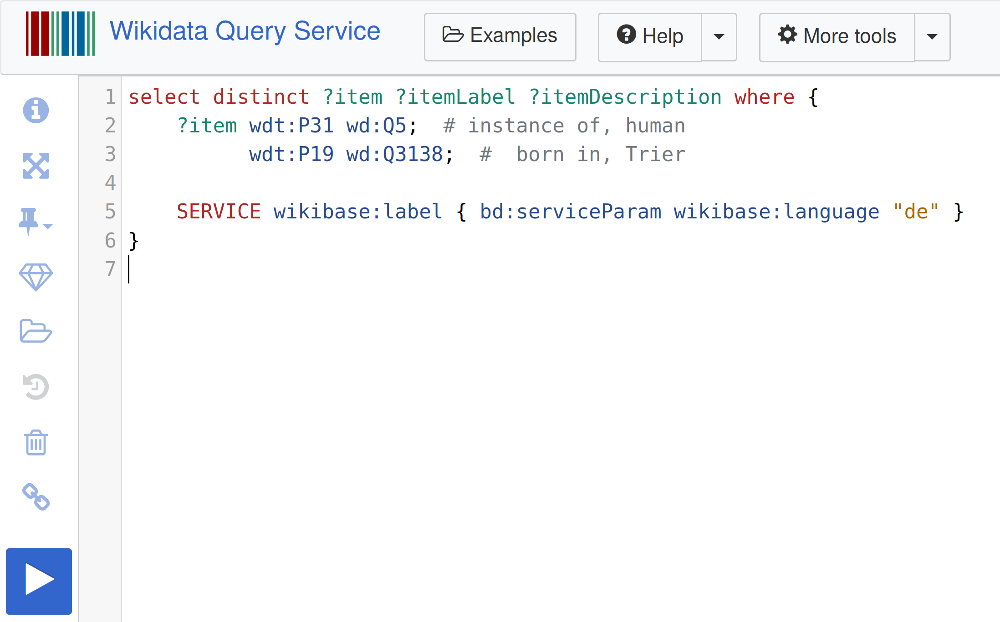</a> * Siehe "Examples": auswählen und abwandeln! -- ## Thema 9: Visualisierung --- ### "The Value of Information Visualization" * Bitte lesen Sie das erste Kapitel mit dem Titel "The Value of Information Visualization" (S. 1-19) in dem Buch Information Visualization. * Sie können das Buch unter folgender DOI finden: https://doi.org/10.1007/978-3-540-70956-5_1 * Bitte beantworten Sie anschließend in einigen Sätzen die folgenden Fragen: * (1) Welchen der vielen im Artikel genannten Gründe, aus denen Informationsvisualisierungen nützlich sein können, finden Sie selbst am wichtigsten und warum? * (2) Beschreiben Sie aber auch eine Situation, in der Ihrer Meinung nach eine Visualisierung weniger nützlich ist als eine Datentabelle oder eine statistische Auswertung. --- ### Warum ist Informationsvisualisierung nützlich? * Visualisierungen verschaffen einen Überblick / fassen viele Daten zusammen (=cognitive benefit) * Visualisierungen machen Korrelationen in den Daten intuitiv sichtbar (=cognitive benefit) * Visualisierungen bleiben besser im Gedächtnis als eine Datentabelle (=cognitive benefit) --- ### (1b) Warum ist Informationsvisualisierung nützlich? * Visualisierungen sprechen den wichtigsten Wahrnehmungskanal von Menschen an (=perceptual benefit) * Visualisierungen machen abstrakte / komplexe Zusammenhänge verständlich (=cognitive benefit) * Visualisierungen kann man schneller verstehen als einen entsprechenden Text (=cognitive benefit) --- ### (1c) Warum ist Informationsvisualisierung nützlich? * Visualisierungen sind ästhetischer / optisch ansprechender als Tabellen (other) * Visualisierungen sind sprachunabhängig verständlich (other) * Visualisierungen können neue Einblicke oder Ideen generieren (other) * Visualisierungen sind nützlich, wenn es um Kommunikation an die Öffentlichkeit geht --- ### (2a) Wann ist eine Visualisierung weniger nützlich als bspw. eine Tabelle? * ... wenn man Einzelfälle näher betrachten möchte, nicht den Überblick * ... wenn man exakte Zahlenwerte ablesen möchte * ... wenn man die Stärke einer Korrelation oder die Signifikanz eines Unterschieds berechnen möchte --- ### (2b) Wann ist eine Visualisierung weniger nützlich als bspw. eine Tabelle? * ... wenn eine Visualisierung einfach zu komplex / verwirrend wäre * ... wenn eine Visualisierung verfälschend wirkt / manipulativ ist * ... wenn man ohnehin nur sehr wenige Daten / Variablen hat --- ### (2c) Wann ist eine Visualisierung weniger nützlich als bspw. eine Tabelle? * ... wenn man die Daten algorithmisch auswerten möchte * ... wenn man sehr viele Zahlenwerte hat * ... wenn es um Daten wie eine Teilnehmerliste geht (Name, Wohnort, Geburtsdatum etc.) * ... wenn man mehr als nur ein oberflächliches Verständnis ermöglichen möchte --- ### (2d) Wann ist eine Visualisierung weniger nützlich als bspw. eine Tabelle? * ... wenn die Visualisierung unnötig kompliziert ist * ... wenn es um Sachfragen geht (bspw. Wie viele Kriege hat Napoleon geführt?, Kalorien von Nahrungsmitteln) * ... wenn es um den Vergleich von Daten geht (bspw. Trefferquote von Fussballern, Preisvergleich) * ... wenn es nötig wäre, viel Text mit in die Visualisierung einzubauen --- #### Beispiel aus Fekete et al. (2) 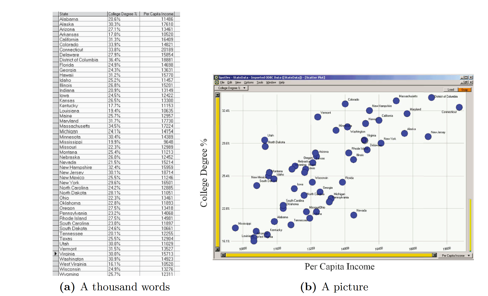 --- #### Beispiel aus Fekete et al. (2) 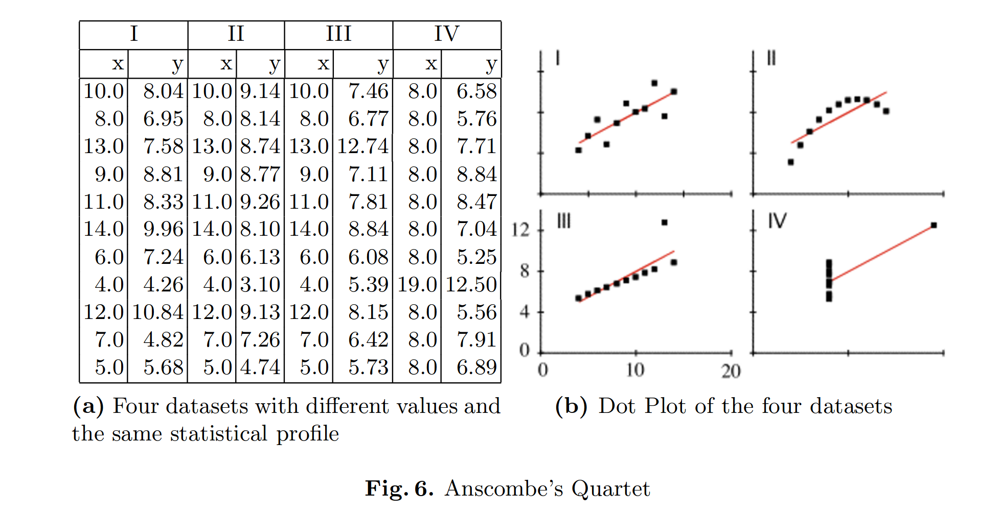 --- #### Gelungene Visualisierungen (1) 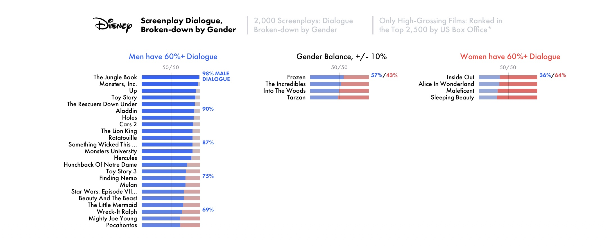 <br/> * Barchart * ++ verständliche Struktur, relevantes Thema * [Link](https://pudding.cool/2017/03/film-dialogue/) --- #### Gelungene Visualisierungen (2) 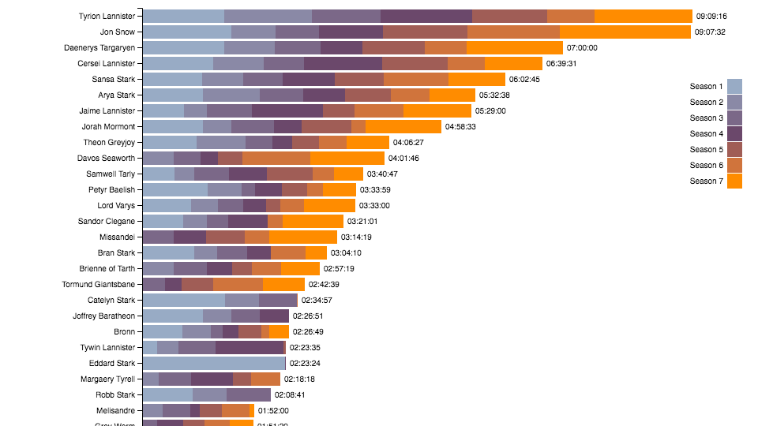 <br/> * stacked horizontal Bar Chart * [Link](https://medium.com/@jeffrey.lancaster/32-game-of-thrones-data-visualizations-f4ab6bc978d8) --- #### Gelungene Visualisierungen (3) 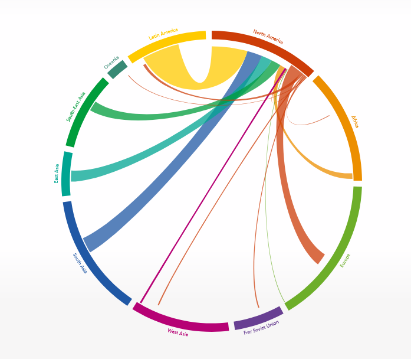 <br/> * Flowchart * ++ interaktiv, ästhetisch, filterbar * [Link](http://download.gsb.bund.de/BIB/global_flow/) --- #### Gelungene Visualisierungen (4) 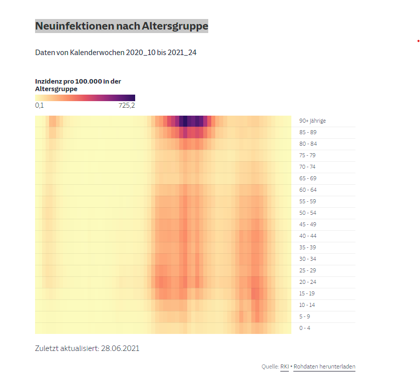 <br/> * Heatmap * ++ vermittelt Überblick, ist interaktiv * [Link](https://www.sueddeutsche.de/wissen/corona-zahlen-1.4844448) --- #### Gelungene Visualisierungen (5) 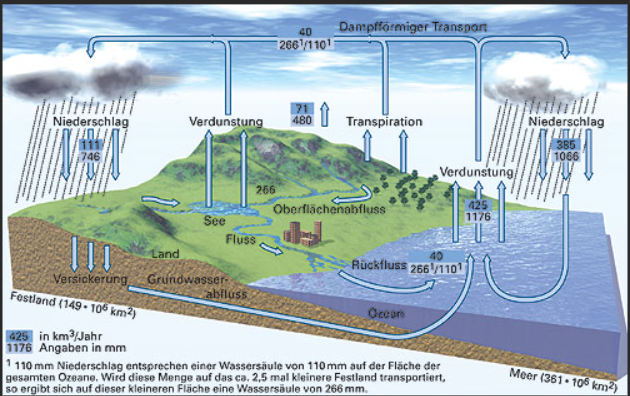 <br/> * Informationsvisualisierung * ++ didaktisch, anschaulich, Legende * [Link](https://www.klett.de/alias/1018294) --- #### Gelungene Visualisierungen (6) <br/> * Kartierung mit Barcharts * ++ interaktiv, anschaulich * [Link](https://manpopex.us/) --- #### Gelungene Visualisierungen (7) 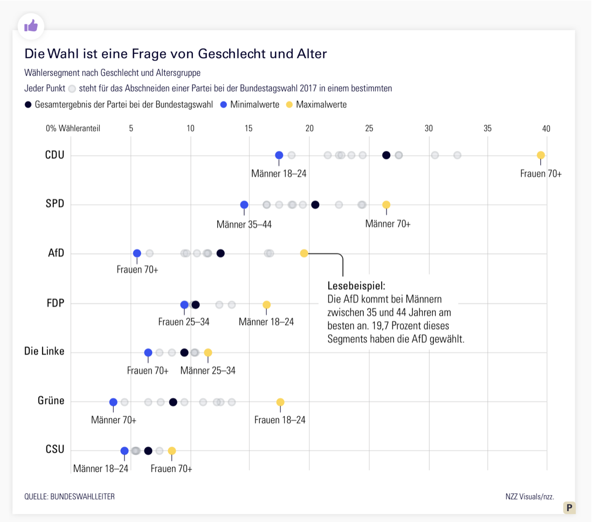 <br/> * Scatterplot mit Labels * übersichtlich, mehrdimensional * [Link](https://www.jonasoesch.ch/articles/datavisualization-for-designers) --- #### Problematische Visualisierungen (1) 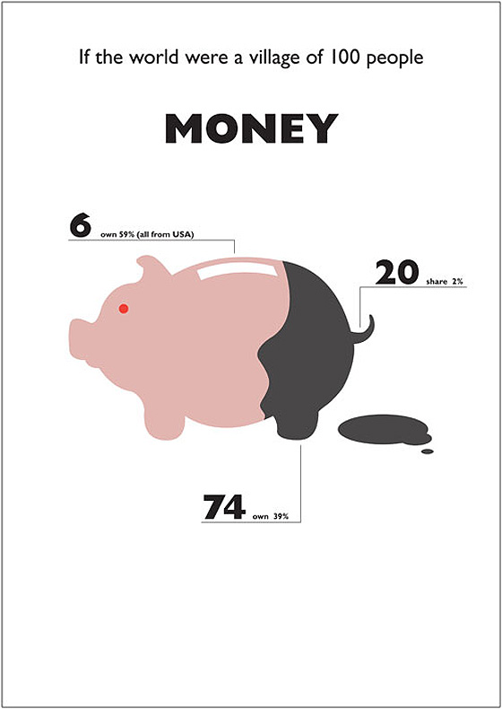 <br/> * -- drei Werte, zwei Farben * -- 100 Personen, 1 Schwein? * [Link](https://stefan.bloggt.es/files/2011/06/the-world-of-100-money.jpg) --- #### Problematische Visualisierungen (2) 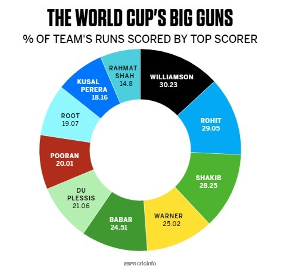 <br/> * -- Pie Chart für ähnliche Werte * [Link](https://www.espncricinfo.com/story/kane-williamson-s-is-the-hand-that-steadies-new-zealand-s-ship-1193354) --- #### Problematische Visualisierungen (3) 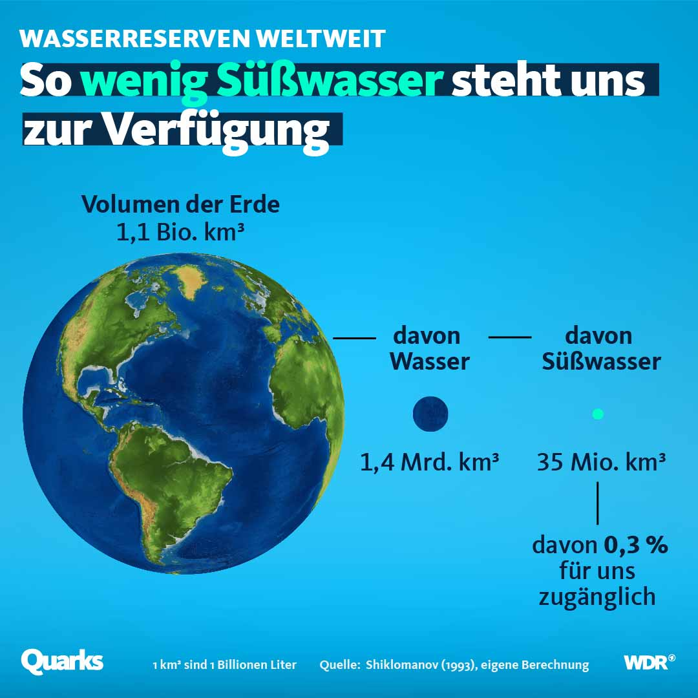 <br/> * Farbkodierte Karte * Zahlen sind aussagekräftiger als die Visualisierung! * [Link](https://www.quarks.de/wp-content/uploads/Wasserreserven-weltweit_klein.jpg) -- ## Thema 10: Open Science